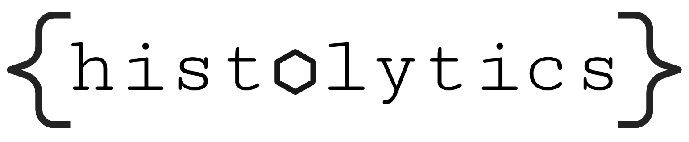

Histolytics¶

A Python library for scalable panoptic spatial analysis of histological WSIs


Welcome to Histolytics documentation
Introduction¶
histolytics is a spatial analysis library for histological whole slide images (WSI) library built upon torch, geopandas and libpysal. The library contains multi-task encoder-decoder architectures for panoptic segmentation of WSIs into __geo_interface__-format and a wide array of spatial analysis tools for the resulting segmentation masks.
Features 🌟¶
- WSI-level panoptic segmentation
- Several panoptic segmentation models for histological WSIs
- Pre-trained models in model-hub. See: histolytics-hub
- Versatile spatial analysis tools for segmented WSIs
Installation 🛠️¶
Getting started with Histolytics¶
Models 🤖¶
- Panoptic HoVer-Net
- Panoptic Cellpose
- Panoptic Stardist
- Panoptic CellVit-SAM
- Panoptic CPP-Net
Contributing¶
We welcome contributions! To get started:
- Fork the repository and create your branch from
main. - Make your changes with clear commit messages.
- Ensure all tests pass and add new tests as needed.
- Submit a pull request describing your changes.
See the contributing guide for detailed guidelines.
Citation¶
@article{2025histolytics,
title={Histolytics: A Panoptic Spatial Analysis Framework for Interpretable Histopathology},
author={Oskari Lehtonen, Niko Nordlund, Shams Salloum, Ilkka Kalliala, Anni Virtanen, Sampsa Hautaniemi},
journal={XX},
volume={XX},
number={XX},
pages={XX},
year={2025},
publisher={XX}
}